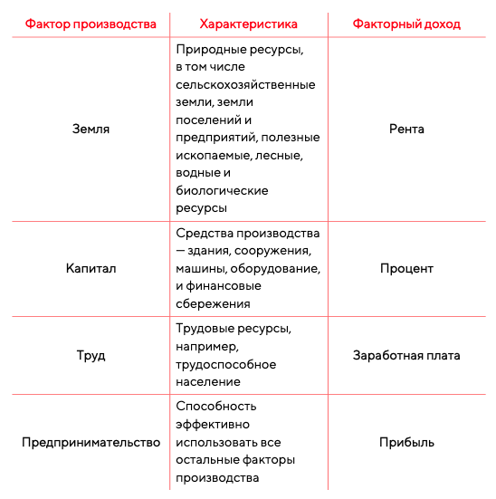

Факторные доходы
Всякая экономическая деятельность базируется на приминении имеющихся экономических ресурсов для получения за счет этого соответствующего дохода.
Факторные доходы в экономике › денежные поступления, которые получает собственник ресурсов от их использования в производственном процессе.
На практике выделяют несколько типов вознагрождений в качестве факторных доходов, в зависимости от вида факторов проиозводства:
-
Рента › (например "земельная" или "горная") вознаграждение за использование природных ресурсов.
-
Процент › вознаграждение за использование денежного капитала
-
Зароботная плата › вознаграждение за труд
-
Прибыль › вознаграждение за приминение предпринимательских способностей.
Сводная сравнительная характеристика разных факторов производства вместе с соответствующими факторными доходами отражена в таблице ниже:
Ограниченность экономических ресурсов
Ограниченность экономических ресурсов выражает конечность, редкость, дефицитность ресурсов, доступных человеку и обществу, что связано с постоянно растущими потребностями.
Относительная ограниченность экономических ресурсов объясняется, тем, что в любой момент количество используемого труда не может превысить величины трудоспособности населения страны, капитала - объем всех созданных до этого единиц капитального оборудования, а земли - всех тех природных благ, которые удалось добыть и использовать.
Степень ограниченности разных факторов производства неадинакова
Ограниченность природных ресурсов зависит от географического положения страны и наличия у нее полезных ископаемых. Эти ограничения могут быть частично преодалены путем использования современных способов обработки земли и новых технологий поиска и добычи полезных ископаeмых.
Ограниченность капитала связана с предшевствующим развитием страны и накопленным производственным капиталом. Эта ограниченность преодолима при наличии необходимого финансового капитала и времени.
Ограниченность рабочей силы обусловлена численностью трудоспособного населения конкретной страны, уровнем его образования и квалификации, а так же продолжительностью рабочего времени. Для преодоления этого ограничения используют привлечение рабочей силы из других стран, переобучение работников трубуемым специальностям, повышение уровня образования и квалификации работников
Ограниченность предпринимательского таланта частично преодолима путем создания в стране благоприятных условий для предпринимательства и привлечения бизнесменов из других государств, например, в результате изменения национальной системы налогооблажения.